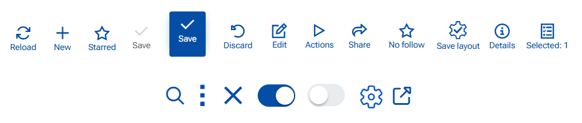
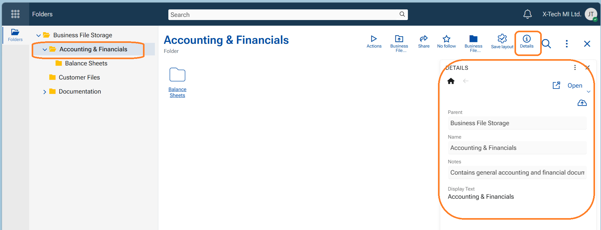

Buttons
Buttons are available everywhere in the platform - on the top ribbon, inside a panel, in the navigation panel...They are accompanied with a text (can be hidden) and a hint to indicate what would happen when pressed. In our platform we chose icons and toggle switches to serve as buttons. In this section we will explain the most common buttons you see on the top ribbon of a record or navigator.

Save
Use when you want to store your changes and continue working in the same form.
Steps:
- Open a record (new or existing).
- Make your changes.
- Click Save.
Result:
- The changes are saved to the database.
- The form remains open.
- If there are no changes, Save is disabled (grey).
- If validation fails, the save is aborted and validation messages are shown.
Save and Close & Save and Reload
These appear in a record that is opened as a sub-form (opened through another form). "Save and Close" is the primary action.
- Use Save & Reload when you want to save your changes and refresh the form data and stay in the form. This will save and reload the form.
- Use Save & Close when you want to save your changes and exit the form. This will save data and close the form returning you to the starting form (e.g. another form or the navigator).

Close (X)
Use when you want to exit the form without explicitly saving.
1: If No changes are made or changes are saved
- Click X.
- The form closes immediately.
2: Unsaved changes exist
- Click X.
- A confirmation dialog appears with the following options:
- Save changes
- Discard changes
- Cancel
- Always save automatically when closing - toggle switch ON/OFF

Explanation of the options
"Save changes" - Saves the changes and then closes the form.
"Discard changes" - Closes the form without saving the changes. The user returns to the navigator form, or the starting form)
"Cancel" - Keeps the form open so you can continue editing.
"Always save automatically when closing" - This is a configuration key under #71 /AlwaysSaveOnClose
Note
- When enabled, this option is saved as a user preference, which means that when closing the form with X will automatically save changes without showing the dialog and without the need to explicitly press "Save" before that.
- The configuration can be swithed ON/OFF from Main menu/Customize form/Settings tab.
Discard
Use when you want to return to view mode of the form without saving your changes.
Steps
- Click "Discard"
- The unsaved changes are lost
- The form gets back to view mode (exit edit mode)

Toggle switch
Use to switch ON or switch OFF features. You can find it in the app-bar menu, in notifications settings, in notifications options, show elements (fields) in a form, etc.
- ON - toggle is "blue", switch goes to the right
- OFF - toggle is "grey", switch goes to the left
Edit
Use when you want to make changes to the data in a form, in a navigator (e.g. add/remove rows, create a new record directly in the navigator, paste rows, etc.), in a line-panel (panel with lines/rows, e.g. add new line), edit a file etc. Only editable records have this button available in the top ribbon.
- to enter Edit mode, press the blue button "Edit". The button disappears and is replaced by the "Save" button
- to exit Edit mode - save changes, or discard changes
Note
Will not appear if the Document (Record) is at Released state, because no edits are allowed then.
New (+)
Use to create a new record. It is available in the navigators, the navigation panel, or in header of a Related data panel (+ New).
When pressed the platforms opens a blank Single record Form to be filled in with the new data.
Important
Do not confuse with button "+ Create new" in line-panels. It creates a new line and is preliminary used to create a new record under specific conditions e.g. related data or details data that has its own form.
Reload
Use to refresh the page, equal to F5 key. It appears in the navigators.
Details
Use to open a side panel "Details" to show selected fields that describe the current record (e.g. Project, Assigned to User, Customer - any field that belongs to the definition of the object).

Selected
Appears in the navigators immediately after one record (row) is focused. Indicates the number of selected records.
The button has an indicative function - to show how many records are selected, and also is a gateway to the functions "Export to" Excel and To Data Exchange.
- If "Export to Excel" is executed, the selection is transformed into an auto-download excel document.
- If 'Export to Data Exchange" is executed, the function creates a record in Exchange/Data Exchange to be executed at a given time.

Save layout
Starred
Follow
No follow, Tagged, Following Favorite